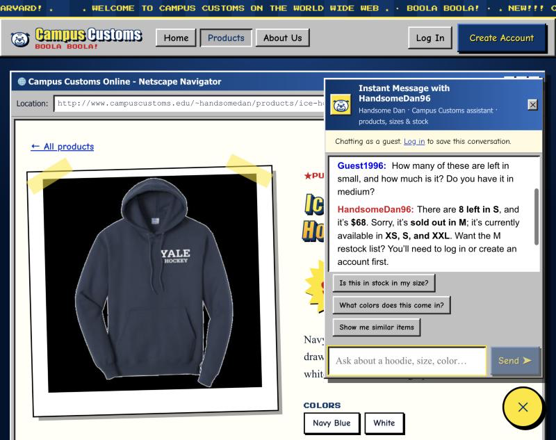
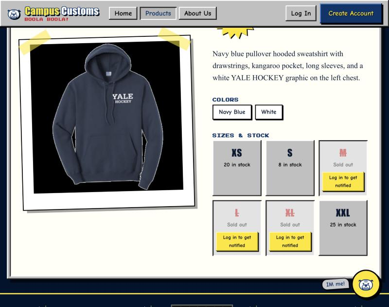
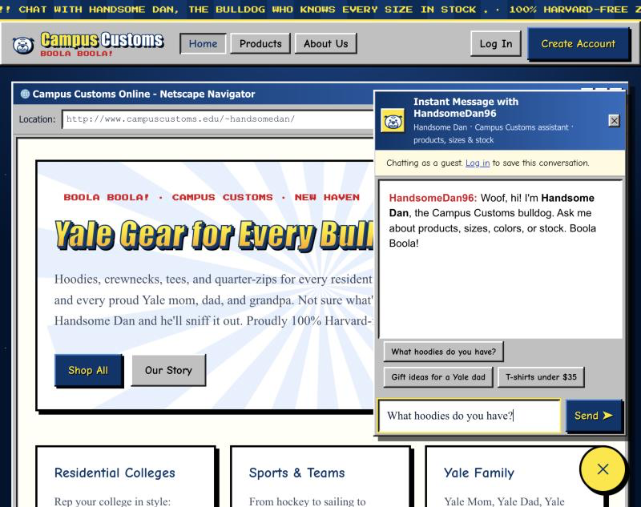
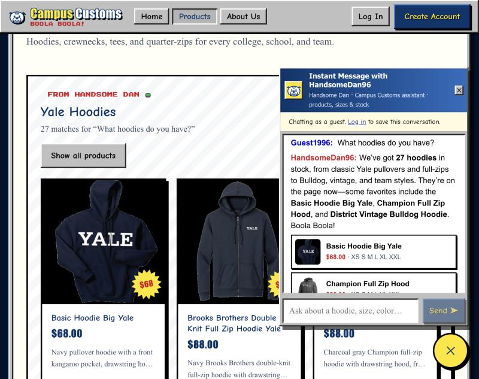
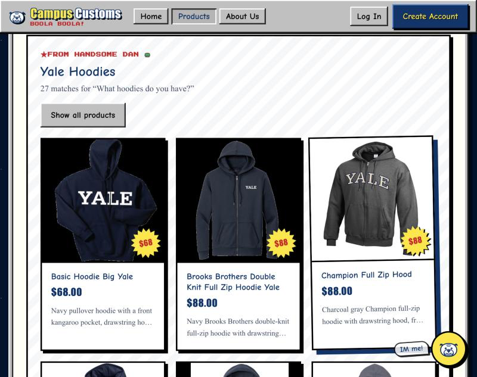
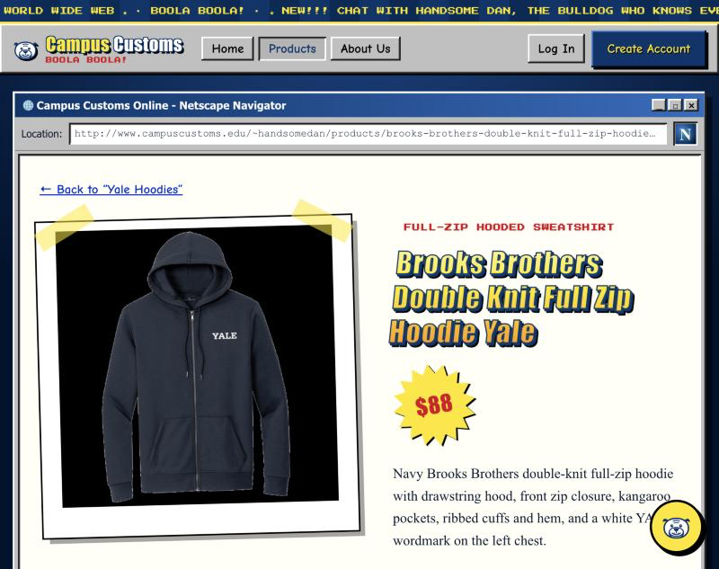
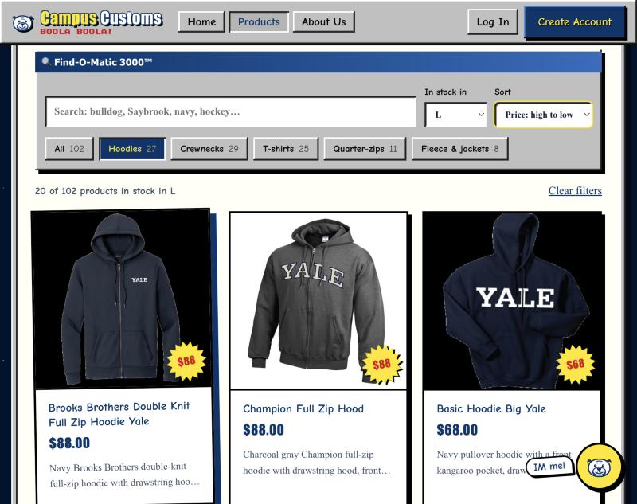

Campus Customs Live App Check
Summary
Check 1: Chat checks an item's inventory level
PASSOn the Ice Hockey Left Chest Hoodie page, I asked Handsome Dan: "How many of these are left in small, and how much is it? Do you have it in medium?"


Database (Supabase): ice-hockey-left-chest-hoodie, price $68.00
| Size | XS | S | M | L | XL | XXL |
|---|---|---|---|---|---|---|
| Quantity | 20 | 8 | 0 | 0 | 0 | 25 |
What this proves: the chatbot looks stock and price up in the database rather than guessing. Its answer (8 in S, $68, M sold out) matches the database and the product page exactly, and it says clearly when a size is out of stock.
Check 2: Category question shows result cards on the page
PASSStarting on the Home page, I asked Handsome Dan: "What hoodies do you have?"

/~handsomedan/), the question is typed but not sent yet.




Database (Supabase)
| Fact | Database | Live site |
|---|---|---|
| Products whose type or name is a hoodie | 27 | 27 cards |
| Brooks Brothers Double Knit Full Zip Hoodie price | $88.00 | $88 |
What this proves: the agent returns structured product matches, and the front end renders them as real product cards on the page (all 27 hoodies in the database). The cards still open the single-item page from Problem 3.
Check 3: Problem 9 usability feature, the Find-O-Matic filters
PASSOn the Products page I clicked Hoodies, set In stock in: L, and set Sort: Price high to low. The address became /products?cat=hoodies&size=L&sort=price-desc, a shareable link.

Database (Supabase)
| Fact | Database | Live site |
|---|---|---|
| Hoodies with size L in stock (quantity > 0) | 20 | 20 |
| Top 3 by price | $88, $88, $68 | $88, $88, $68 |
| Hoodies sold out in L (correctly hidden) | 7: Vintage Sailor Bulldog, Fencing, Ice Hockey, Sailing, UA Gameday, Yale Grandpa, Yale Sports Golf | none shown |
What this proves: the Problem 9 "find products faster" feature works on the live site. Category, in-stock size, and price sort combine correctly, and items a shopper can't buy in their size are hidden, matching the database.